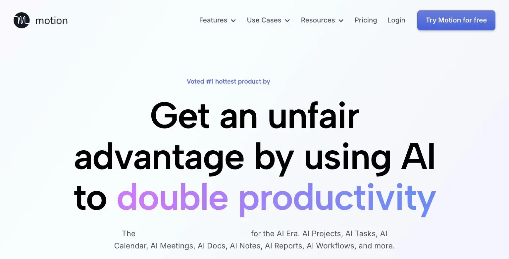

Motion
It had never actually met the gnome's calendar. It scheduled the whole day with total, unearned confidence anyway.
Motion is an AI calendar that auto-schedules your tasks around meetings, aimed at solo operators juggling both a task list and a full calendar without an assistant to manage the conflicts. Pricing runs $29/month (Individual) to $39/month, with no free plan to test the workflow first. The site's verdict is a genuinely useful concept for calendar-heavy solo operators, but the lack of a free tier and a real behavior-change requirement makes it a riskier trial than most tools on this list.
Motion auto-schedules your entire day around your tasks and meetings with the confidence of someone who has never actually met your calendar. No free plan, so it's a real commitment to letting a robot run your Tuesday.
- Value for price4.5/10
- Capability7/10
- Ease of use7.5/10
- Trial safety4.5/10
Motion's core feature is auto-scheduling: instead of manually blocking time for tasks around your existing meetings, you give it a task list and deadlines, and it automatically slots the work into open calendar gaps, re-shuffling automatically when new meetings get added.

Motion's differentiator against a normal calendar app is the automatic re-shuffling: when a new meeting gets booked into a slot that had a task scheduled, Motion automatically moves the task rather than leaving you to manually resolve the conflict yourself.
Example from usemotion.com. Not independently tested by Solos Gems.Pricing breakdown
- Individual ($29/mo): AI auto-scheduling for a single calendar, task management, project tracking
- Individual Pro-tier ($39/mo): Expanded features for heavier task and project volume
- No free plan: Trial period exists but there is no ongoing free tier to fall back on
The real risk with no free plan
Every other productivity tool on this list lets you test the actual workflow fit at no cost before paying. Motion doesn't, you're committing to $29-39/month based on a limited trial period. The auto-scheduling concept is genuinely useful if your calendar is dense enough that manual time-blocking is a real daily friction point, but if your schedule is lighter, the value proposition is harder to justify without a safety net to fall back on if it doesn't fit your workflow.
Pros
- Auto-scheduling genuinely solves a real problem for calendar-dense solo operators
- Automatic re-shuffling around new meetings removes a manual task worth doing daily
- Combines task management and calendar scheduling in one tool instead of two
Cons
- No free plan, the only way to de-risk the trial is a limited time-boxed period
- Requires a real behavior change, trusting the AI to schedule your day
- Not worth it if your calendar isn't dense enough to create genuine scheduling conflicts
Common questions
Is there a free way to try Motion?
No free plan, the only way to de-risk the trial is a limited time-boxed trial period. That makes it a bigger upfront commitment than most tools on this list.
Who actually benefits from Motion's AI scheduling?
Solo operators with a genuinely full calendar and a long task list actively competing for the same hours. If your calendar isn't dense enough to create real scheduling conflicts, there's nothing for Motion's AI to actually optimize.
Does Motion require changing how I work?
Yes, a real behavior change: trusting the AI to schedule your day rather than manually blocking time yourself. That adjustment period is worth knowing about going in, it's not a passive add-on to your existing calendar habits.